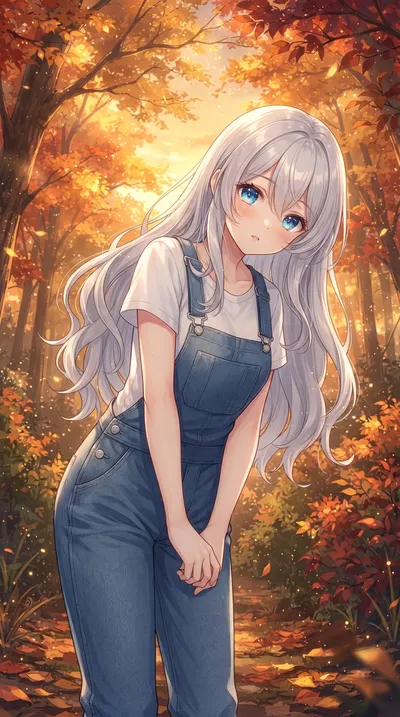
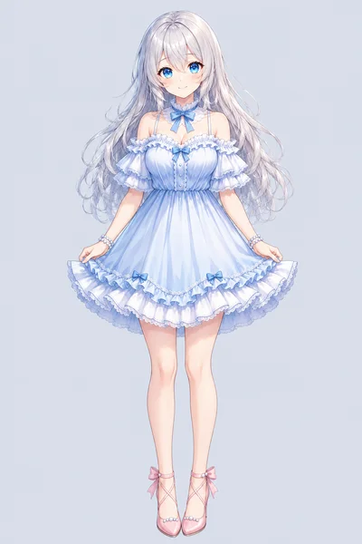

Gallery 種から花へ、そしてもう一度
三姉妹のギャラリーは4つあります。
«種» から «花» へ、そして «新しい種» からもう一度。作った順に並べました。見たいところからどうぞ🌸

Palette Seeds
Sisters' Palette のはじまりの種
三姉妹がこの世に生まれた、いちばん最初のイラストたち。 ここから全部がはじまりました。
見る →Sisters' Palette
三姉妹の色とらしさ、750枚
種から生まれた専用AIモデルで、それぞれの «らしさ» を 5カテゴリ×50枚ずつ。1枚ずつプロンプトを考えて咲かせた作品集です。
750枚
New Palette Seeds
三姉妹をおぼえさせた新しい種
«この子はこういう顔で、こういう髪» と新しい専用AIモデルに おぼえてもらうために作った学習素材。もう一度、ここからはじめます。
165枚New Sisters' Palette
新しいAIモデルで描き直す750枚
新しい種から育てたAIモデルで、同じ750のコンセプトを 1枚ずつ描き直しています。もうしばらくお待ちください🌱
準備中クレジット表記＋各ページURLの明記で使用および引用OKです（画像の改変・再配布は禁止）。
© ルピナス・ロゼッティ(Lupinus Rossetti)/AI Bloom Sisters
https://lupinusrossetti.github.io/AIBSPortfolioBlog/gallery.html